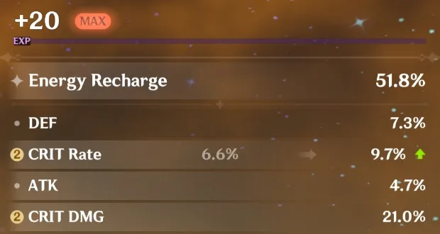
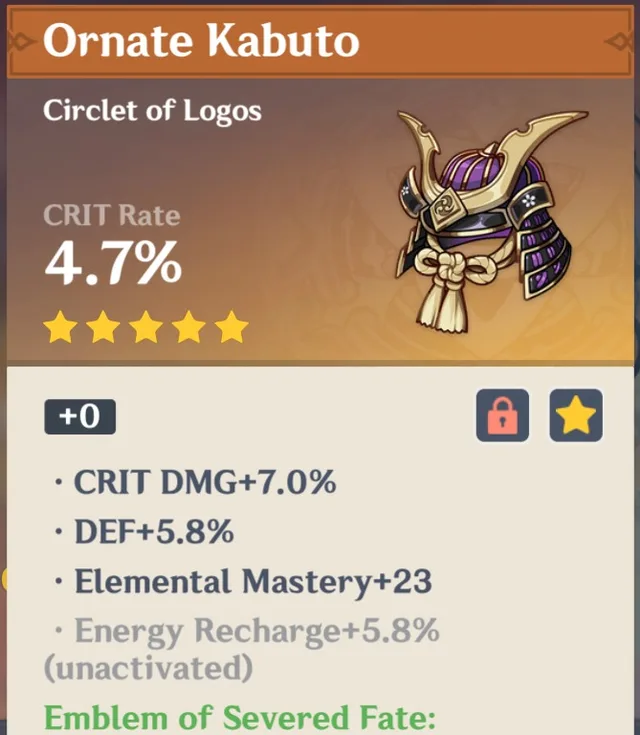
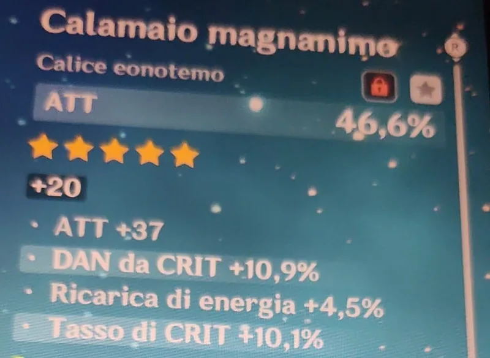
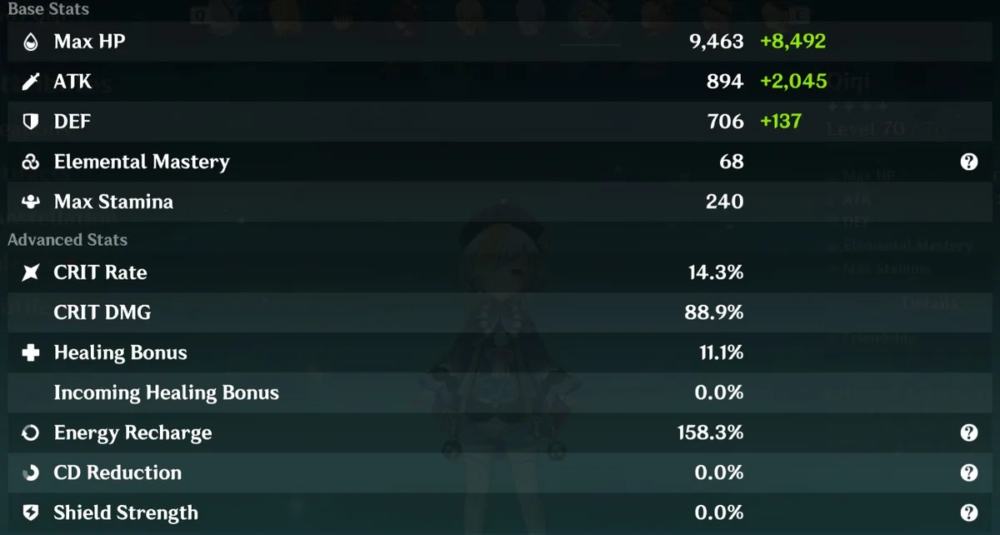

Guida generale · Manufatti
Come buildare i personaggi
Leggere un manufatto, capire quanto vale e decidere se tenerlo. Clicca sugli screenshot per ingrandirli.
1. Leggere un manufatto
Il numero nel cerchio

- In alto la statistica principale, sotto le 4 statistiche secondarie.
- Il numero nel cerchio dice quante volte quella statistica è salita. Nessun cerchio = mai.
- Un 5★ riceve 5 potenziamenti (a +4, +8, +12, +16, +20): più ne finiscono nelle statistiche giuste, meglio è.
Quanto vale un roll
| Secondaria (5★) | 70% | 80% | 90% | 100% | CV |
|---|---|---|---|---|---|
| Tasso di CRIT | 2,7% | 3,1% | 3,5% | 3,9% | 7,8 |
| DAN da CRIT | 5,4% | 6,2% | 7,0% | 7,8% | 7,8 |
| ATT% | 4,1% | 4,7% | 5,2% | 5,8% | – |
| PS% | 4,1% | 4,7% | 5,2% | 5,8% | – |
| DIF% | 5,1% | 5,8% | 6,6% | 7,3% | – |
| Maestria elementale | 16,3 | 18,6 | 21,0 | 23,3 | – |
| Ricarica di energia | 4,5% | 5,2% | 5,8% | 6,5% | – |
| ATT fissa | 13,6 | 15,6 | 17,5 | 19,4 | – |
| PS fissa | 209 | 239 | 269 | 299 | – |
| DIF fissa | 16,2 | 18,5 | 20,8 | 23,1 | – |
Ogni potenziamento vale uno dei 4 livelli, in media l’85%. Per contare i roll dividi il valore per il massimo: 10,5% di Tasso di CRIT ÷ 3,9 ≈ 2,7 roll. Le secondarie fisse (ATT, PS, DIF) valgono molto meno delle percentuali. Valori da KeqingMains.
2. 3 o 4 statistiche secondarie
Quella in grigio

3. Statistica principale
Fiore e Piuma sono fissi| Scala su | Sabbie del tempo |  Calice eonotemo Calice eonotemo |
 Corona della ragione Corona della ragione |
|---|---|---|---|
| ATT | ATT% | Bonus DAN elementale | CRIT |
| PS | PS% | Bonus DAN elementale | CRIT |
| DIF | DIF% | Bonus DAN elementale | CRIT |
| Maestria + CRIT | Maestria | Maestria / Bonus DAN | CRIT |
| Supporto | Ricarica / PS% | PS% | PS% / Bonus guarigione |
Serve tanta Ricarica di energia? Sabbie con Ricarica al posto di quelle “giuste”, come nello screenshot del punto 1.
4. Crit Value (CV)
Quanto CRIT c’è nelle secondarie

Massimo teorico 54,4. Per tutta la build (5 pezzi): 150 buona, 180 ottima, 210+ end game. Fasce indicative.
5. Roll Value (RV)
Quando il CV ingannaIl CV vede solo i CRIT. Il Roll Value conta i roll in tutte le statistiche utili al personaggio (CRIT + ATT%, PS%, Maestria…): 100% = un roll pieno.

Cambia: vince su tutti e due.

Dubbio: più CV, ma 2 roll di ATT% in meno. Tieni quello che ti lascia più vicino all’1:2.

Tieni: 3 roll di Maestria, che per Nefer valgono.
Pezzo singolo: 300% discreto, 450% buono, 600%+ ottimo. Statistiche utili usate: CRIT + ATT% per Mavuika, CRIT + Maestria elementale per Nefer.
6. La build
Dalla schermata del personaggio

Set come Cacciatore della Maréchaussée o Codice d’ossidiana danno Tasso di CRIT solo in combattimento: in schermata il rapporto sembra sbilanciato, ma va bene.
7. Tenere o buttare
Prima di spendere EXP
- 1Statistica principale giusta?Su Sabbie, Calice e Corona: se no, usalo per potenziare gli altri.
- 2Almeno un CRIT + una statistica utile?Conta anche quella in grigio.
- 3Porta a +4, poi a +8Due potenziamenti in statistiche inutili? Fermati.
- 4Batte il pezzo equipaggiato?Confronta CV e RV, come al punto 5.
8. Calcolatore
Nella pagina Tools
Calcolatore della buildSemplice dalla schermata del personaggio, oppure pezzo per pezzo con CV e RV.
Apri →
Valori dei roll da KeqingMains. Screenshot dal gioco. Fasce di CV e RV indicative.